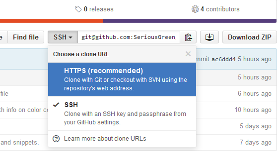

Git-Control

Provides a GUI interface to manage all commonly-used git commands.
This is a tutorial to install and set up the Git-Control properly.

Install Git-Control Package
Install the package directly in Atom
Go to the Install window in Settings tab in Atom
Search for git-control and install the package
Configure Repository to use SSH
Change the clone url from HTTPS to SSH
Clone repository onto the device
If the repository is already on the device, change the remote URL from HTTPS to SSH
using instructions from:
Switching remote URLs from HTTPS to SSH
Generating a SSH Key
Follow the instructions here to generate a SSH key locally and adding it to your GitHub account:
Generating SSH keysNote: git-control only works with SSH keys with no passphrase
Adding Git to PATH
Open up the Advance System Settings from System Properties
Open the Environment Variables window and add the Git path to the system variable PATH
Note: the default path for Windows is "C:\Users\username\AppData\Local\Programs\Git\cmd"
Final Instructions
Perform a git pull in Git Bash once
Got to Atom and open up the Git-Control tab using:
/* keyboard shortcut: "ctrl+alt+o" */
If there isn't any error msgs in the console logs then Git-Control is all set up